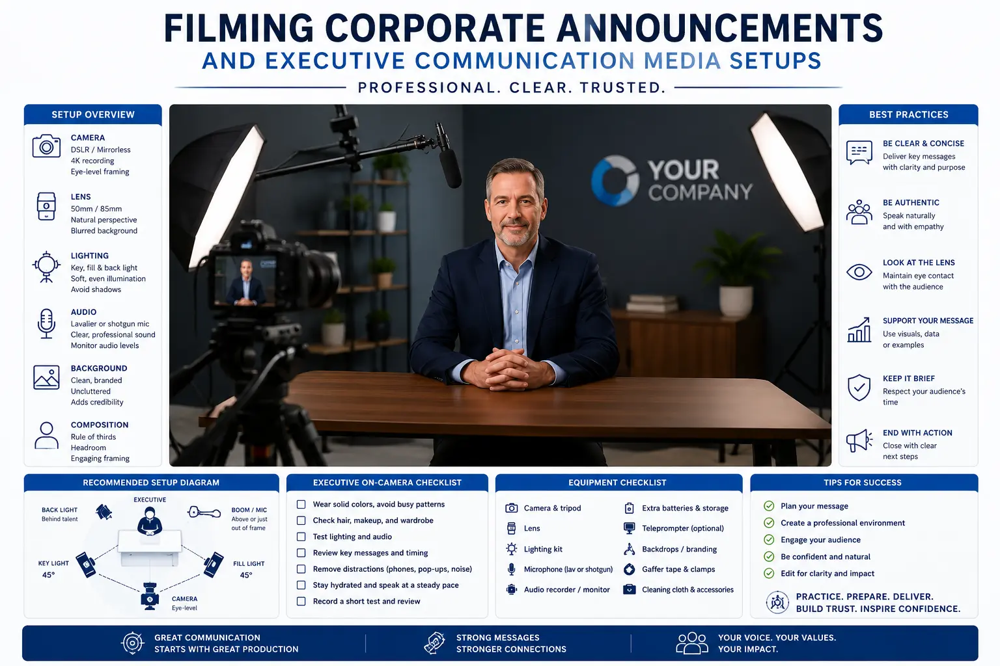
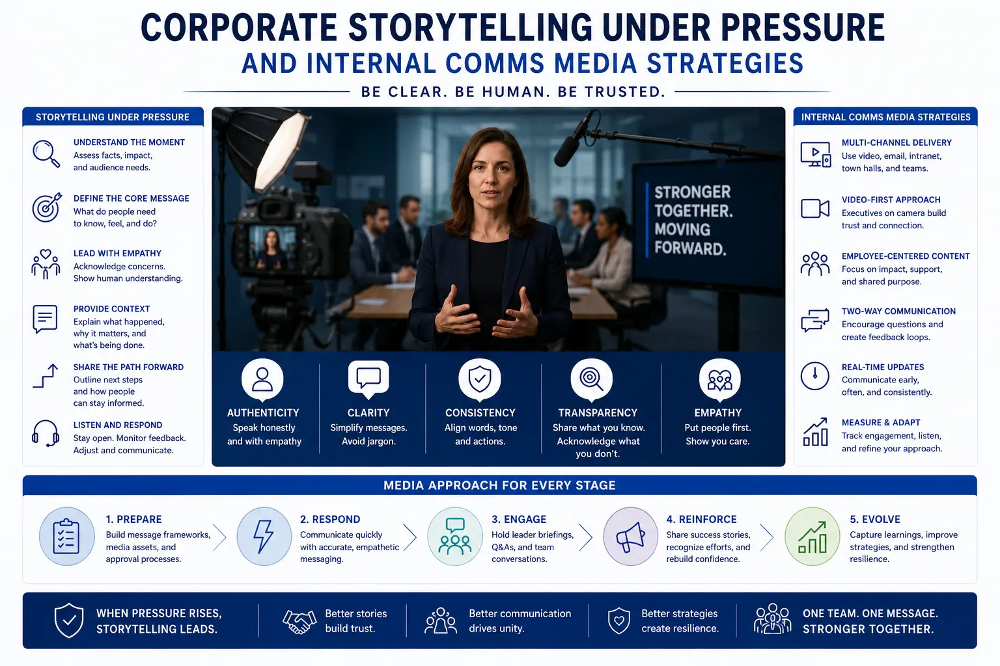

Transparent Video Production Frameworks for Corporate Crisis Communications
The Power of Transparency: Why Video Is the Ultimate Tool for Crisis Mitigation
When a corporate crisis hits—whether it is a product recall, a data breach, a financial restructuring, or a public controversy—the default response has historically been the written press release. Drafted by legal departments and polished by public relations teams, these statements often read as cold, defensive, and evasive. In the digital age, stakeholders see through this shield. They do not want formatted statements; they want human accountability.
This is where video becomes the ultimate medium for crisis mitigation. By replacing text with strategic video assets, organizations restore the human connection when it is needed most. Seeing an executive's face, hearing their tone, and reading their body language builds trust in a way that text cannot. Through clean **Corporate Identity Videography** and structured **Crisis Response Video Assets**, organizations can control their narrative, communicate clear steps, and demonstrate empathy.
However, crisis video production is not a standard corporate shoot. It requires a specialized framework that balances speed, authenticity, and legal compliance, ensuring that **Executive Communication Media** is deployed quickly and effectively to calm stakeholders.
Setting Up the Framework: Speed, Context, and Visual Authenticity
To build trust under pressure, the production must feel real and direct rather than corporate and staged.
- Establishing an authentic executive video presence. The key to an **authentic executive video presence** is avoiding over-produced setups. Avoid complex studio backdrops, colored wash lights, and aggressive makeup. The executive should be filmed in a natural office setting—such as a workspace or conference room—under clean, soft light. Avoid dramatic lighting setups, as high-contrast shadows can make the speaker look defensive or untrustworthy.
- Filming corporate announcements with direct eye contact. When **Filming corporate announcements**, the executive must look directly into the lens. Even a slight shift in gaze can make them look evasive. Use an eye-line teleprompter mounted directly in front of the lens. Keep the script in short, conversational sentences to prevent the speaker from sounding robotic.
- Fast turnaround crisis response video assets. A crisis response must be swift. To deploy **Crisis Response Video Assets** within hours, set up pre-approved camera settings, simple audio routing, and direct export pipelines. Having a pre-vetted crisis crew on standby prevents delays in getting the message out.
- Optimizing public relations media support kits. When sending video to news organizations, package the statement with b-roll footage. Clean b-roll of the office, operations, or resolution actions provides **public relations media support** channels with the assets they need to report the story accurately, preventing third-party media from filling visual spaces with negative stock footage.
Build Stakeholder Trust
Seeing a leader address a crisis directly builds credibility. Video humanizes the brand, showing that management is actively addressing the situation rather than hiding behind lawyers.
Control the Narrative
Written statements are easily cut and taken out of context. A complete video statement shared on official channels ensures your message is delivered as intended, without edits.
Calm Internal Teams
Crises can damage internal morale. Distributing transparent video statements internally keeps employees informed and aligned, reducing rumors and maintaining team focus.
Provide Media Assets
Providing high-quality video statements to news outlets ensures that television networks and digital publishers use your official statement rather than speculating.

The Message Architecture: Structuring the Crisis Script
A crisis video script must follow a structured narrative path that prioritizes accountability and action over excuses.
- The immediate acknowledgment. The video must open by stating the facts of the issue within the first 15 seconds. Do not bury the news or make excuses. State clearly what happened, who is affected, and why you are speaking out now.
- The statement of accountability. Take responsibility for the situation. Even if the crisis was caused by an external partner or a technical glitch, own the response. Use clear, direct language like "We take responsibility for this error" rather than passive corporate phrases.
- The action plan. This is the core of **corporate storytelling under pressure**. Detail the concrete steps your company is taking to resolve the issue and prevent it from happening again. Focus on action: who is working on it, what changes are being made, and when they will be complete.
- The commitment to updates. End the video by outlining when and where stakeholders can expect the next update. This shows that your team is committed to ongoing transparency and is not treat this video as a one-off statement.
Distribution Strategy: Internal, Public, and Media Channels
Deploying crisis media requires a careful rollout strategy across multiple communication tiers.
Internal Comms Media
- Share the video message with employees first via internal portals, Slack, or email.
- Ensure your staff hears the news directly from leadership before it hits public media channels.
- Equip managers with talking points to address team concerns and maintain alignment.
Public and Social Channels
- Host the video on your official website newsroom and post it on key corporate social media accounts.
- Pin the video to the top of social feeds to ensure it is the first thing visitors see when looking for answers.
- Disable comments if necessary, but provide a clear link to a dedicated customer support page.
PR & Press Outlets
- Deliver high-quality downloadable video packages directly to press contacts and newsrooms.
- Include clean, timestamped transcripts to help journalists quote the statement accurately.
- Provide B-roll of operations or support centers to give media outlets positive visual context.
Integrating Long-Term Transparency: Company Transparency Films
Crisis communication is not just about reacting; it is about building a foundation of trust before a crisis ever occurs.
- Proactive company transparency films. Brands should produce documentary-style **company transparency films** that show their operations, sourcing, testing procedures, and culture. These films build brand equity, creating a buffer of trust that helps protect the company during future challenges.
- Regular executive communication media. Establish a cadence of video communication from your leadership team. Regular updates build a familiar, trustworthy connection with your audience, making crisis announcements feel like a continuation of an open conversation.
- The employee advocacy loop. Encourage employees to share internal videography assets when appropriate. An authentic workforce sharing company updates is one of the most powerful ways to humanize a brand and rebuild trust.

Conclusion
When an organization faces public challenges, transparent video production is an essential tool for leadership and crisis mitigation. By replacing formal text releases with authentic, clear, and empathetic **Crisis Response Video Assets**, organizations can rebuild trust and protect their corporate reputation.
Through structured **Executive Communication Media**, disciplined script architectures, and coordinated distribution across public and **internal comms media** channels, companies can navigate challenging situations with clear authority.
At The PhD Ads in Madurai, we specialize in high-integrity **Corporate Identity Videography**, guide brands through **corporate storytelling under pressure**, and produce transparent video assets that help organizations communicate clearly during critical moments.
Key Topics
Navigate Challenges with Clear Leadership
Need to produce structured, fast-turnaround crisis response video assets? At The PhD Ads in Madurai, we specialize in corporate videography frameworks that protect your brand equity and deliver clear, authentic executive statements.
Email: team@e2o.in